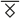

<nav class="navbar navbar-expand-lg navbar-dark bg-dark">
  <a class="navbar-brand font-size" [routerLink]="['/']">
    
    Warg</a
  >
  <button
    class="navbar-toggler"
    type="button"
    data-toggle="collapse"
    data-target="#navbarColor02"
    aria-controls="navbarColor02"
    aria-expanded="false"
    aria-label="Toggle navigation"
  >
    <span class="navbar-toggler-icon"></span>
  </button>

  <div class="collapse navbar-collapse" id="navbarColor02">
    <ul class="navbar-nav mr-auto">
      <li
        [routerLinkActive]="['active']"
        [routerLinkActiveOptions]="{ exact: true }"
      >
        <a class="nav-link" [routerLink]="['/']">Home</a>
      </li>
    </ul>
    <ul class="navbar-nav ml-auto">
      <li
        class="nav-item"
        [routerLinkActive]="['active']"
        [routerLinkActiveOptions]="{ exact: true }"
      >
        <a class="nav-link" [routerLink]="['/login']">Login</a>
      </li>
      <li
        class="nav-item"
        [routerLinkActive]="['active']"
        [routerLinkActiveOptions]="{ exact: true }"
      >
        <a class="nav-link" [routerLink]="['/register']">Register</a>
      </li>
    </ul>
  </div>
</nav>
